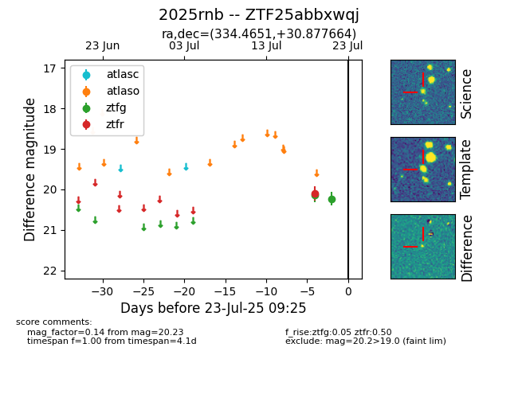

Target ZTF25abbxwqj at 2025-07-23 12:37, see:
FINK: fink-portal.org/ZTF25abbxwqj
Lasair: lasair-ztf.lsst.ac.uk/objects/ZTF25abbxwqj
ALeRCE: alerce.online/object/ZTF25abbxwqj
TNS: wis-tns.org/object/2025rnb
YSE: ziggy.ucolick.org/yse/transient_detail/2025rnb
alt names
ZTF25abbxwqj (ztf,fink)
2025rnb (tns,yse)
coordinates:
equatorial (ra, dec) = (334.4651,+30.87766)
galactic (l, b) = (88.0099,-21.38627)
photometry
last ztfg=20.23, ztfr=20.10
2 ztfg, 1 ztfr detections
